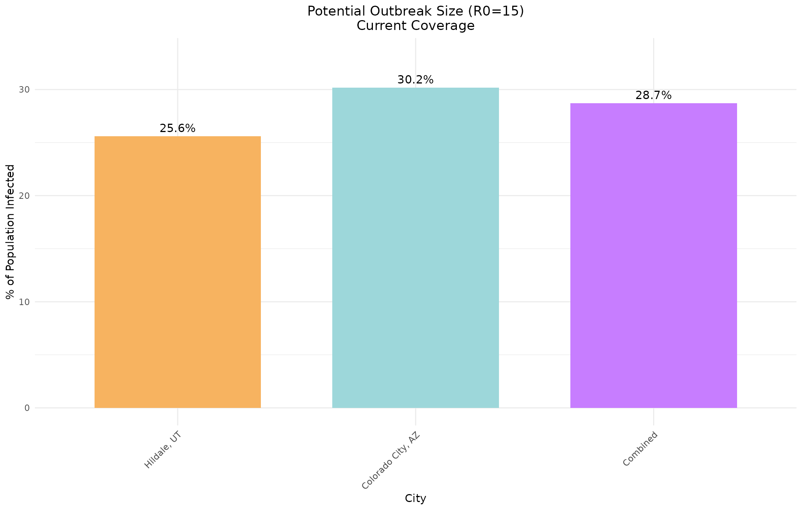
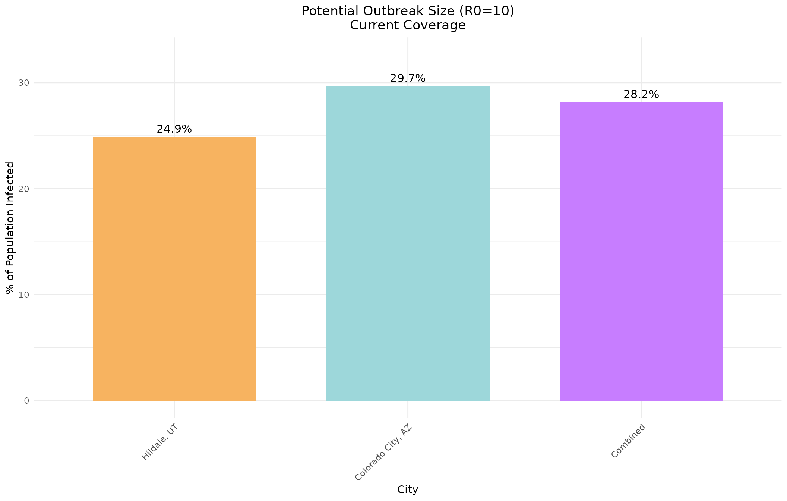
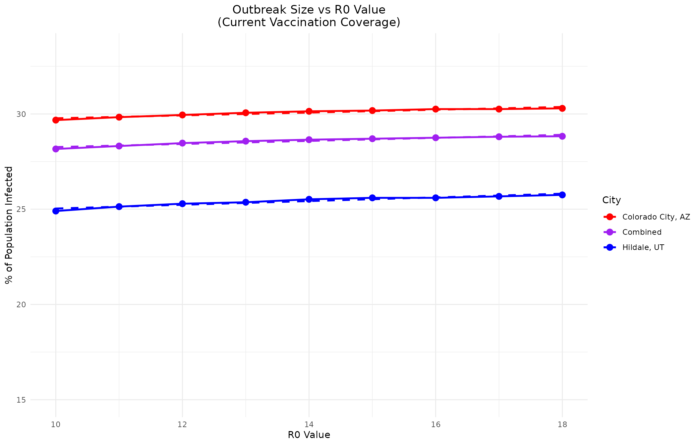

City Population Data: Measles Outbreak Modeling Comparison
hildale_and_colorado_city.Rmd
if (!requireNamespace("ggplot2", quietly = TRUE)) {
stop("Package 'ggplot2' is needed for this vignette. Please install it.")
}
library(multigroup.vaccine)
library(socialmixr)
library(ggplot2)
# Load city data files
hildale_path <- system.file("extdata", "hildale_ut_2023.csv", package = "multigroup.vaccine")
colorado_city_path <- system.file("extdata", "colorado_city_az_2023.csv", package = "multigroup.vaccine")Measles Model Setup
For measles outbreak modeling, we’ll use age groups based on the available ACS data:
# Age groups based on ACS 5-year intervals, adjusted to avoid zero populations
agelims <- c(0, 5, 10, 15, 20, 25, 30, 35, 40, 45, 50, 55, 60, 65, 70)
# Vaccine effectiveness by age group (adjusted for these age groups)
# Using approximate values for these broader age categories
ageveff <- rep(0.97, length(agelims)) # Most age groups have high effectiveness
ageveff[1] <- 0.93 # Under 5 may have slightly lower effectiveness
# Initial infection in the 25-29 age group (working age adults)
# This corresponds to age group 25-29 (index 6)
initgrp <- 6Getting City Population Data
The getCityData function provides flexible age grouping
options:
- Default 5-year groups: Matches the ACS data structure
-
Single-year ages: Set
age_groups = NULLto disaggregate 5-year groups uniformly - Custom age groups: Specify any age limits vector
Let’s demonstrate these options with Hildale, UT data:
# Example 1: Default 5-year age groups (0-4, 5-9, 10-14, ...)
hildale_5yr <- getCityData(
city_name = "Hildale city, Utah",
csv_path = hildale_path
)
#> Aggregating ages 0 to 4: sum = 57
#> Aggregating ages 5 to 9: sum = 110
#> Aggregating ages 10 to 14: sum = 181
#> Aggregating ages 15 to 19: sum = 157
#> Aggregating ages 20 to 24: sum = 134
#> Aggregating ages 25 to 29: sum = 128
#> Aggregating ages 30 to 34: sum = 55
#> Aggregating ages 35 to 39: sum = 110
#> Aggregating ages 40 to 44: sum = 59
#> Aggregating ages 45 to 49: sum = 105
#> Aggregating ages 50 to 54: sum = 64
#> Aggregating ages 55 to 59: sum = 32
#> Aggregating ages 60 to 64: sum = 29
#> Aggregating ages 65 to 69: sum = 35
#> Aggregating ages 70 to 74: sum = 0
#> Aggregating ages 75 to 79: sum = 27
#> Aggregating ages 80 to 84: sum = 18
cat("Example 1: Default 5-year age groups\n")
#> Example 1: Default 5-year age groups
cat("Total population:", format(hildale_5yr$total_pop, big.mark = ","), "\n")
#> Total population: 1,301
cat("Number of age groups:", length(hildale_5yr$age_pops), "\n")
#> Number of age groups: 18
cat("First few groups:", paste(head(hildale_5yr$age_labels, 3), collapse = ", "), "\n\n")
#> First few groups: 0to4, 5to9, 10to14
# Example 2: Single-year ages (disaggregated from 5-year ACS groups)
hildale_1yr <- getCityData(
city_name = "Hildale city, Utah",
csv_path = hildale_path,
age_groups = NULL
)
cat("Example 2: Single-year ages (disaggregated)\n")
#> Example 2: Single-year ages (disaggregated)
cat("Total population:", format(hildale_1yr$total_pop, big.mark = ","), "\n")
#> Total population: 1,301
cat("Number of age groups:", length(hildale_1yr$age_pops), "\n")
#> Number of age groups: 86
cat("First few ages:", paste(head(hildale_1yr$age_labels, 5), collapse = ", "), "\n\n")
#> First few ages: age0, age1, age2, age3, age4
# Example 3: Custom age groups (0-18, 18-65, 65+)
hildale_custom <- getCityData(
city_name = "Hildale city, Utah",
csv_path = hildale_path,
age_groups = c(0, 18, 65)
)
#> Aggregating ages 0 to 17: sum = 442.2
#> Aggregating ages 18 to 64: sum = 778.8
cat("Example 3: Custom age groups (0-18, 18-65, 65+)\n")
#> Example 3: Custom age groups (0-18, 18-65, 65+)
cat("Total population:", format(hildale_custom$total_pop, big.mark = ","), "\n")
#> Total population: 1,301
for (i in seq_along(hildale_custom$age_labels)) {
pct <- 100 * hildale_custom$age_pops[i] / hildale_custom$total_pop
cat(sprintf(" %s: %s (%.1f%%)\n",
hildale_custom$age_labels[i],
format(hildale_custom$age_pops[i], big.mark = ","),
pct))
}
#> 0to17: 442.2 (34.0%)
#> 18to64: 778.8 (59.9%)
#> 65plus: 80 (6.1%)Now let’s retrieve population data for both cities using our custom age groups for measles modeling:
cities <- c("Hildale city, Utah", "Colorado City town, Arizona")
city_data_list <- list()
for (city in cities) {
if (grepl("Hildale", city)) {
csv_path <- hildale_path
} else {
csv_path <- colorado_city_path
}
data <- getCityData(
city_name = city,
csv_path = csv_path,
age_groups = agelims
)
city_data_list[[city]] <- data
cat("\n", city, ":\n", sep = "")
cat(" Total population:", format(data$total_pop, big.mark = ","), "\n")
cat(" Age distribution:\n")
for (i in seq_along(data$age_labels)) {
pct <- 100 * data$age_pops[i] / data$total_pop
cat(sprintf(" %s: %s (%.1f%%)\n",
data$age_labels[i],
format(data$age_pops[i], big.mark = ","),
pct))
}
}
#> Aggregating ages 0 to 4: sum = 57
#> Aggregating ages 5 to 9: sum = 110
#> Aggregating ages 10 to 14: sum = 181
#> Aggregating ages 15 to 19: sum = 157
#> Aggregating ages 20 to 24: sum = 134
#> Aggregating ages 25 to 29: sum = 128
#> Aggregating ages 30 to 34: sum = 55
#> Aggregating ages 35 to 39: sum = 110
#> Aggregating ages 40 to 44: sum = 59
#> Aggregating ages 45 to 49: sum = 105
#> Aggregating ages 50 to 54: sum = 64
#> Aggregating ages 55 to 59: sum = 32
#> Aggregating ages 60 to 64: sum = 29
#> Aggregating ages 65 to 69: sum = 35
#>
#> Hildale city, Utah:
#> Total population: 1,301
#> Age distribution:
#> 0to4: 57 (4.4%)
#> 5to9: 110 (8.5%)
#> 10to14: 181 (13.9%)
#> 15to19: 157 (12.1%)
#> 20to24: 134 (10.3%)
#> 25to29: 128 (9.8%)
#> 30to34: 55 (4.2%)
#> 35to39: 110 (8.5%)
#> 40to44: 59 (4.5%)
#> 45to49: 105 (8.1%)
#> 50to54: 64 (4.9%)
#> 55to59: 32 (2.5%)
#> 60to64: 29 (2.2%)
#> 65to69: 35 (2.7%)
#> 70plus: 45 (3.5%)
#> Aggregating ages 0 to 4: sum = 125
#> Aggregating ages 5 to 9: sum = 213
#> Aggregating ages 10 to 14: sum = 435
#> Aggregating ages 15 to 19: sum = 478
#> Aggregating ages 20 to 24: sum = 289
#> Aggregating ages 25 to 29: sum = 215
#> Aggregating ages 30 to 34: sum = 145
#> Aggregating ages 35 to 39: sum = 91
#> Aggregating ages 40 to 44: sum = 81
#> Aggregating ages 45 to 49: sum = 131
#> Aggregating ages 50 to 54: sum = 168
#> Aggregating ages 55 to 59: sum = 132
#> Aggregating ages 60 to 64: sum = 70
#> Aggregating ages 65 to 69: sum = 7
#>
#> Colorado City town, Arizona:
#> Total population: 2,598
#> Age distribution:
#> 0to4: 125 (4.8%)
#> 5to9: 213 (8.2%)
#> 10to14: 435 (16.7%)
#> 15to19: 478 (18.4%)
#> 20to24: 289 (11.1%)
#> 25to29: 215 (8.3%)
#> 30to34: 145 (5.6%)
#> 35to39: 91 (3.5%)
#> 40to44: 81 (3.1%)
#> 45to49: 131 (5.0%)
#> 50to54: 168 (6.5%)
#> 55to59: 132 (5.1%)
#> 60to64: 70 (2.7%)
#> 65to69: 7 (0.3%)
#> 70plus: 18 (0.7%)Scenario 1: Current Vaccination Coverage (95% adult rate)
Let’s model outbreaks under estimated vaccination coverage levels for these communities.
# Estimated vaccination coverage for these communities
# These are approximate values based on general Utah/Arizona vaccination rates
# School age children vaccination rate is based on the data available for 2024
# For adults, we assume 95% coverage for a conservative modeling approach
current_coverage_95 <- c(
0.44, # under 5, assume 1 percentage point lower than 5-9
0.45, # 5-9
0.50, # 10-14
0.45, # 15-19
0.95, # 20-24
0.95, # 25-29
0.95, # 30-34
0.95, # 35-39
0.95, # 40-44
0.95, # 45-49
0.95, # 50-54
0.95, # 55-59
0.95, # 60-64
0.95, # 65-69
1.00 # 70+
)Hildale, Utah - Current Coverage (95% adult rate)
hildale_data <- city_data_list[["Hildale city, Utah"]]
hildale_current <- multigroup.vaccine:::getOutputTable(
agelims = agelims,
agepops = hildale_data$age_pops,
agecovr = current_coverage_95,
ageveff = ageveff,
initgrp = initgrp
)
cat("Hildale, Utah - Current Vaccination Coverage\n")
#> Hildale, Utah - Current Vaccination Coverage
print(as.data.frame(hildale_current), row.names = FALSE)
#> R0 R0local Rv pEscape escapeInfTot under5 5to9 10to14 15to19 20to24
#> 10 18.02337 9.084099 0.607 324 30 62 93 88 10
#> 11 19.82571 9.992509 0.619 327 31 62 93 88 10
#> 12 21.62804 10.900919 0.658 329 31 62 93 88 10
#> 13 23.43038 11.809329 0.673 330 32 62 93 88 10
#> 14 25.23272 12.717739 0.717 332 32 62 93 88 11
#> 15 27.03505 13.626149 0.716 333 33 62 93 88 11
#> 16 28.83739 14.534559 0.744 333 33 62 93 88 11
#> 17 30.63973 15.442969 0.734 334 33 62 93 88 11
#> 18 32.44206 16.351379 0.772 335 33 62 93 88 11
#> 25to29 30to34 35to39 40to44 45to49 50to54 55to59 60to64 65to69 70+
#> 9 4 8 5 7 4 2 1 2 0
#> 9 4 8 5 7 4 2 1 2 0
#> 9 4 8 5 7 4 2 1 2 1
#> 9 4 9 5 8 4 2 1 2 1
#> 9 4 9 5 8 5 2 1 2 1
#> 10 4 9 5 8 5 3 2 2 1
#> 10 4 9 5 8 5 3 2 2 1
#> 10 4 9 5 8 5 3 2 2 1
#> 10 4 9 5 8 5 3 2 2 1Colorado City, Arizona - Current Coverage (95% adult rate)
colorado_data <- city_data_list[["Colorado City town, Arizona"]]
colorado_current <- multigroup.vaccine:::getOutputTable(
agelims = agelims,
agepops = colorado_data$age_pops,
agecovr = current_coverage_95,
ageveff = ageveff,
initgrp = initgrp
)
cat("\nColorado City, Arizona - Current Vaccination Coverage\n")
#>
#> Colorado City, Arizona - Current Vaccination Coverage
print(as.data.frame(colorado_current), row.names = FALSE)
#> R0 R0local Rv pEscape escapeInfTot under5 5to9 10to14 15to19 20to24
#> 10 22.78073 11.93155 0.640 771 67 120 224 269 22
#> 11 25.05880 13.12470 0.681 775 68 120 224 269 22
#> 12 27.33687 14.31786 0.686 778 70 120 224 269 22
#> 13 29.61495 15.51101 0.715 781 71 120 224 269 23
#> 14 31.89302 16.70417 0.729 783 71 120 224 269 23
#> 15 34.17109 17.89732 0.771 784 72 120 224 269 23
#> 16 36.44917 19.09048 0.769 786 72 120 224 269 23
#> 17 38.72724 20.28363 0.785 786 73 120 224 269 23
#> 18 41.00531 21.47679 0.797 787 73 120 224 269 23
#> 25to29 30to34 35to39 40to44 45to49 50to54 55to59 60to64 65to69 70+
#> 15 10 7 6 9 11 8 3 1 0
#> 16 10 7 6 9 12 8 3 1 1
#> 16 10 7 6 10 12 8 4 1 1
#> 16 11 7 6 10 12 9 4 1 1
#> 16 11 7 6 10 12 9 4 1 1
#> 16 11 7 6 10 12 9 4 1 1
#> 17 11 7 6 10 13 9 4 1 1
#> 17 11 7 6 10 13 9 4 1 1
#> 17 11 7 6 10 13 9 4 1 1Visualization: Comparing Cities
Let’s visualize the outbreak potential across the two cities:
# Extract R0=15 results for comparison
r0_15_idx <- which(hildale_current[, "R0"] == 15)
# Calculate combined city data
combined_age_pops <- hildale_data$age_pops + colorado_data$age_pops
combined_total_pop <- hildale_data$total_pop + colorado_data$total_pop
combined_current <- multigroup.vaccine:::getOutputTable(
agelims = agelims,
agepops = combined_age_pops,
agecovr = current_coverage_95,
ageveff = ageveff,
initgrp = initgrp
)
cities_names <- c("Hildale, UT", "Colorado City, AZ", "Combined")
escape_pcts <- c(
100 * hildale_current[r0_15_idx, "escapeInfTot"] / hildale_data$total_pop,
100 * colorado_current[r0_15_idx, "escapeInfTot"] / colorado_data$total_pop,
100 * combined_current[r0_15_idx, "escapeInfTot"] / combined_total_pop
)
# Create data frame for ggplot
plot_data <- data.frame(
City = factor(cities_names, levels = cities_names),
Percentage = escape_pcts,
Color = c("#f7b360", "#9dd7da", "#c77dff")
)
ggplot(plot_data, aes(x = City, y = Percentage, fill = Color)) +
geom_bar(stat = "identity", width = 0.7) +
geom_text(aes(label = sprintf("%.1f%%", Percentage)), vjust = -0.5, size = 4) +
scale_fill_identity() +
labs(title = "Potential Outbreak Size (R0=15)\nCurrent Coverage",
x = "City",
y = "% of Population Infected") +
theme_minimal() +
theme(axis.text.x = element_text(angle = 45, hjust = 1),
plot.title = element_text(hjust = 0.5)) +
ylim(0, max(escape_pcts) * 1.1)
Now with a lower R0 value:
# Extract R0=10 results for comparison
r0_10_idx <- which(hildale_current[, "R0"] == 10)
escape_pcts_10 <- c(
100 * hildale_current[r0_10_idx, "escapeInfTot"] / hildale_data$total_pop,
100 * colorado_current[r0_10_idx, "escapeInfTot"] / colorado_data$total_pop,
100 * combined_current[r0_10_idx, "escapeInfTot"] / combined_total_pop
)
# Create data frame for ggplot
plot_data_10 <- data.frame(
City = factor(cities_names, levels = cities_names),
Percentage = escape_pcts_10,
Color = c("#f7b360", "#9dd7da", "#c77dff")
)
ggplot(plot_data_10, aes(x = City, y = Percentage, fill = Color)) +
geom_bar(stat = "identity", width = 0.7) +
geom_text(aes(label = sprintf("%.1f%%", Percentage)), vjust = -0.5, size = 4) +
scale_fill_identity() +
labs(title = "Potential Outbreak Size (R0=10)\nCurrent Coverage",
x = "City",
y = "% of Population Infected") +
theme_minimal() +
theme(axis.text.x = element_text(angle = 45, hjust = 1),
plot.title = element_text(hjust = 0.5)) +
ylim(0, max(escape_pcts_10) * 1.1)
Comparison of R0 Values with Trend Analysis
Let’s compare how different R0 values impact the outbreak size (in % of pop) in these communities under current vaccination coverage, including trendlines and statistical comparison:
r0_values <- c(10, 11, 12, 13, 14, 15, 16, 17, 18)
hildale_percents <- numeric(length(r0_values))
colorado_percents <- numeric(length(r0_values))
combined_percents <- numeric(length(r0_values))
for (i in seq_along(r0_values)) {
r0_idx_hildale <- which(hildale_current[, "R0"] == r0_values[i])
r0_idx_colorado <- which(colorado_current[, "R0"] == r0_values[i])
r0_idx_combined <- which(combined_current[, "R0"] == r0_values[i])
hildale_percents[i] <- 100 * hildale_current[r0_idx_hildale, "escapeInfTot"] / hildale_data$total_pop
colorado_percents[i] <- 100 * colorado_current[r0_idx_colorado, "escapeInfTot"] / colorado_data$total_pop
combined_percents[i] <- 100 * combined_current[r0_idx_combined, "escapeInfTot"] / combined_total_pop
}
# Create data frame for ggplot
r0_data <- data.frame(
R0 = rep(r0_values, 3),
Percentage = c(hildale_percents, colorado_percents, combined_percents),
City = rep(c("Hildale, UT", "Colorado City, AZ", "Combined"), each = length(r0_values)),
Color = rep(c("blue", "red", "purple"), each = length(r0_values))
)
# Fit linear models for trendlines
hildale_lm <- lm(hildale_percents ~ r0_values)
colorado_lm <- lm(colorado_percents ~ r0_values)
combined_lm <- lm(combined_percents ~ r0_values)
# Create trendline data
trend_data <- data.frame(
R0 = rep(r0_values, 3),
Trend = c(predict(hildale_lm), predict(colorado_lm), predict(combined_lm)),
City = rep(c("Hildale, UT", "Colorado City, AZ", "Combined"), each = length(r0_values))
)
ggplot() +
geom_line(data = r0_data, aes(x = R0, y = Percentage, color = City), size = 1) +
geom_point(data = r0_data, aes(x = R0, y = Percentage, color = City), size = 3) +
geom_line(data = trend_data, aes(x = R0, y = Trend, color = City), linetype = "dashed", size = 1) +
scale_color_manual(values = c("Hildale, UT" = "blue", "Colorado City, AZ" = "red", "Combined" = "purple")) +
labs(title = "Outbreak Size vs R0 Value\n(Current Vaccination Coverage)",
x = "R0 Value",
y = "% of Population Infected") +
theme_minimal() +
theme(plot.title = element_text(hjust = 0.5)) +
ylim(15, max(r0_data$Percentage) * 1.1)
#> Warning: Using `size` aesthetic for lines was deprecated in ggplot2 3.4.0.
#> ℹ Please use `linewidth` instead.
#> This warning is displayed once every 8 hours.
#> Call `lifecycle::last_lifecycle_warnings()` to see where this warning was
#> generated.
Statistical Comparison of Trendlines
Let’s perform a statistical comparison of the relationship between R0 values and outbreak size for the cities and combined population:
# Extract slope coefficients and their standard errors
hildale_summary <- summary(hildale_lm)
colorado_summary <- summary(colorado_lm)
combined_summary <- summary(combined_lm)
hildale_slope <- coef(hildale_summary)[2, 1]
hildale_se <- coef(hildale_summary)[2, 2]
colorado_slope <- coef(colorado_summary)[2, 1]
colorado_se <- coef(colorado_summary)[2, 2]
combined_slope <- coef(combined_summary)[2, 1]
combined_se <- coef(combined_summary)[2, 2]
# Output results
cat("Statistical Comparison of R0-Outbreak Size Relationships\n\n")
#> Statistical Comparison of R0-Outbreak Size Relationships
cat("Hildale, UT:\n")
#> Hildale, UT:
cat(sprintf(" Slope: %.4f (SE: %.4f)\n", hildale_slope, hildale_se))
#> Slope: 0.0974 (SE: 0.0101)
cat(sprintf(" R²: %.4f\n", hildale_summary$r.squared))
#> R²: 0.9296
cat("\n")
cat("Colorado City, AZ:\n")
#> Colorado City, AZ:
cat(sprintf(" Slope: %.4f (SE: %.4f)\n", colorado_slope, colorado_se))
#> Slope: 0.0744 (SE: 0.0082)
cat(sprintf(" R²: %.4f\n", colorado_summary$r.squared))
#> R²: 0.9208
cat("\n")
cat("Combined Cities:\n")
#> Combined Cities:
cat(sprintf(" Slope: %.4f (SE: %.4f)\n", combined_slope, combined_se))
#> Slope: 0.0804 (SE: 0.0084)
cat(sprintf(" R²: %.4f\n", combined_summary$r.squared))
#> R²: 0.9288
cat("\n")
cat("Summary:\n")
#> Summary:
cat("The combined population shows the most gradual increase in outbreak size with R0,\n")
#> The combined population shows the most gradual increase in outbreak size with R0,
cat("suggesting that aggregating the populations provides a more stable epidemic profile.\n")
#> suggesting that aggregating the populations provides a more stable epidemic profile.Scenario 2: Linear Interpolation of Adult Vaccination Rates
Let’s model outbreaks under this interpolated adult vaccination coverage.
We will interpolate vaccination rate for adults between the end of highschool age up to 95% for the 49-65 age groups.
# Define age limits and corresponding coverage rates
# current_coverage_95 is defined above
# for 20, 25, 30, 35, 40, 45, 50 adjust the rate to interpolate between 45% and 95%
adult_ages <- c(15, 20, 25, 30, 35, 40, 45, 50)
adult_rates <- seq(0.45, 0.95, length.out = length(adult_ages))
linear_coverage <- current_coverage_95
for (i in seq_along(adult_ages)) {
age <- adult_ages[i]
rate <- adult_rates[i]
age_idx <- which(agelims[-length(agelims)] == age)
linear_coverage[age_idx] <- rate
}
cat("Interpolated Adult Vaccination Coverage Rates:\n")
#> Interpolated Adult Vaccination Coverage Rates:
for (i in seq_along(adult_ages)) {
age <- adult_ages[i]
age_idx <- which(agelims[-length(agelims)] == age)
cat(sprintf(" Age %d: %.2f%%\n", age, linear_coverage[age_idx] * 100))
}
#> Age 15: 45.00%
#> Age 20: 52.14%
#> Age 25: 59.29%
#> Age 30: 66.43%
#> Age 35: 73.57%
#> Age 40: 80.71%
#> Age 45: 87.86%
#> Age 50: 95.00%Combined communities visualization
# Extract R0=15 results for comparison
# combine the two communities populations into one and run the sim on this combined data
combined_pops <- hildale_data$age_pops + colorado_data$age_pops
combined_95 <- multigroup.vaccine:::getOutputTable(
agelims = agelims,
agepops = combined_pops,
agecovr = current_coverage_95,
ageveff = ageveff,
initgrp = initgrp
)
# print results for current coverage
cat("Combined Cities - Current Vaccination Coverage (95% adult rate)\n")
#> Combined Cities - Current Vaccination Coverage (95% adult rate)
print(as.data.frame(combined_95), row.names = FALSE)
#> R0 R0local Rv pEscape escapeInfTot under5 5to9 10to14 15to19 20to24
#> 10 21.07870 10.90532 0.645 1098 97 182 317 358 31
#> 11 23.18656 11.99586 0.680 1104 99 182 317 358 31
#> 12 25.29443 13.08639 0.678 1110 101 182 317 358 32
#> 13 27.40230 14.17692 0.730 1114 103 182 317 358 32
#> 14 29.51017 15.26745 0.727 1117 104 182 317 358 32
#> 15 31.61804 16.35799 0.730 1119 105 182 317 358 33
#> 16 33.72591 17.44852 0.750 1121 105 182 317 358 33
#> 17 35.83378 18.53905 0.771 1123 106 182 317 358 33
#> 18 37.94165 19.62958 0.760 1124 106 182 317 358 33
#> 25to29 30to34 35to39 40to44 45to49 50to54 55to59 60to64 65to69 70+
#> 24 14 15 10 17 15 10 5 2 1
#> 25 15 15 11 18 16 10 5 2 1
#> 25 15 15 11 18 16 11 6 2 1
#> 25 15 15 11 18 17 11 6 2 1
#> 26 15 16 11 18 17 11 6 2 1
#> 26 16 16 11 19 17 11 6 2 1
#> 26 16 16 11 19 17 12 7 2 1
#> 26 16 16 11 19 17 12 7 2 1
#> 27 16 16 11 19 18 12 7 2 1
combined_linear <- multigroup.vaccine:::getOutputTable(
agelims = agelims,
agepops = combined_pops,
agecovr = linear_coverage,
ageveff = ageveff,
initgrp = initgrp
)
cat("Combined Cities - Linear Interpolated Adult Vaccination Coverage\n")
#> Combined Cities - Linear Interpolated Adult Vaccination Coverage
print(as.data.frame(combined_linear), row.names = FALSE)
#> R0 R0local Rv pEscape escapeInfTot under5 5to9 10to14 15to19 20to24
#> 10 21.07870 11.10596 0.776 1540 103 182 317 358 208
#> 11 23.18656 12.21655 0.793 1545 104 182 317 358 209
#> 12 25.29443 13.32715 0.809 1549 105 182 317 358 209
#> 13 27.40230 14.43774 0.830 1551 106 182 317 358 209
#> 14 29.51017 15.54834 0.857 1553 107 182 317 358 209
#> 15 31.61804 16.65894 0.864 1554 107 182 317 358 209
#> 16 33.72591 17.76953 0.872 1555 107 182 317 358 209
#> 17 35.83378 18.88013 0.862 1556 107 182 317 358 209
#> 18 37.94165 19.99072 0.872 1556 108 182 317 358 209
#> 25to29 30to34 35to39 40to44 45to49 50to54 55to59 60to64 65to69 70+
#> 144 69 57 29 34 17 12 7 2 1
#> 145 70 57 30 34 17 12 7 2 1
#> 145 70 57 30 35 18 12 7 2 1
#> 146 71 58 30 35 18 12 7 2 1
#> 146 71 58 30 35 18 12 7 2 1
#> 146 71 58 30 35 18 13 7 3 2
#> 146 71 58 30 35 18 13 7 3 2
#> 146 71 58 30 35 18 13 8 3 2
#> 146 71 58 30 35 18 13 8 3 2
r0_15_idx <- which(combined_linear[, "R0"] == 15)
r0_15_idx_95 <- which(combined_95[, "R0"] == 15)
# Combine both scenarios into a single bar chart
combined_percentages <- c(
100 * combined_95[r0_15_idx_95, "escapeInfTot"] / sum(combined_pops),
100 * combined_linear[r0_15_idx, "escapeInfTot"] / sum(combined_pops)
)
scenario_names <- c("Current Coverage\n(95% adult rate)", "Linear Interpolated\nAdult Coverage")
# Create data frame for ggplot
scenario_data <- data.frame(
Scenario = factor(scenario_names, levels = scenario_names),
Percentage = combined_percentages,
Color = c("#f7b360", "#9dd7da")
)
ggplot(scenario_data, aes(x = Scenario, y = Percentage, fill = Color)) +
geom_bar(stat = "identity", width = 0.7) +
geom_text(aes(label = sprintf("%.1f%%", Percentage)), vjust = -0.5, size = 4) +
scale_fill_identity() +
labs(title = "Combined Communities: % of Population Infected (R0=15)",
x = "Vaccination Scenario",
y = "% of Population Infected") +
theme_minimal() +
theme(axis.text.x = element_text(angle = 45, hjust = 1),
plot.title = element_text(hjust = 0.5)) +
ylim(0, max(combined_percentages) * 1.1)